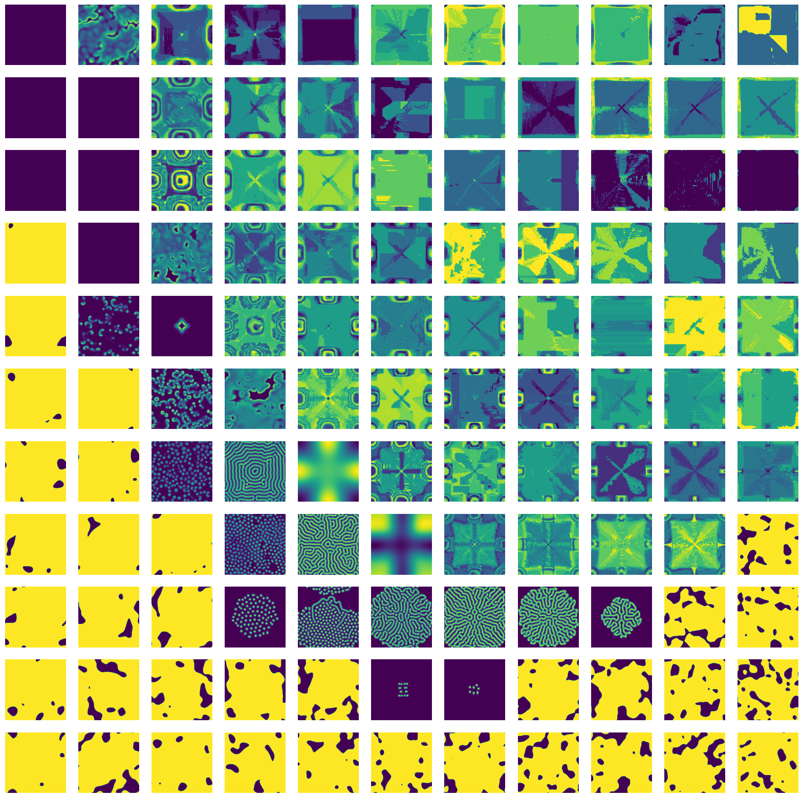

About
This is a demo that shows how to do a parameter scan using Snakemake. We’re reproducing results from a paper by Pearson 1993 (arXiv link) in Science.

Reaction-diffusion systems are not just a theory. With some effort you can create these reactions for real:
This demo needs the following imports:
file:Snakefile
import numpy as np
import h5py as h5
from numba import njit
<<laplacian>>
<<gray-scott-model>>
<<euler-method>>
<<initial-state>>
<<run-model>>
<<parameter-space>>
# Not shown here
<<a-solution>>The paper computes a system by Gray and Scott (1985). The idea is that we have a two-dimensional space with two substances, \(U\) and \(V\). The substance \(V\) is a promotor to turn \(U\) into more \(V\), and a second reaction slowly turns \(V\) into an inert waste product \(P\):
\[\begin{align} U + 2V &\to 3V \\ V &\to P. \end{align}\]
We have a constant feed of more \(U\) onto the system by a feed rate \(F\). This means that \(U\) is self-inhibiting, while \(V\) has a positive feedback. Meanwhile, both substances are diffusing at different rates. The combination of an inhibitor and a promotor diffusing at different rates gives rise to so-called Turing patterns, after a 1952 paper by Alan Turing.
The equations given by Pearson 1993 for the Gray-Scott model are as follows:
\[\begin{align} \frac{\partial U}{\partial t} &= D_u \nabla^2 U - UV^2 + F(1 - U)\\ \frac{\partial V}{\partial t} &= D_v \nabla^2 V + UV^2 - (F + k)V. \end{align}\]
In Python these translate to:
«gray-scott-model»
def gray_scott_model(F, k, D_u=2e-5, D_v=1e-5, res=0.01):
def df(state: np.ndarray, _: float) -> np.ndarray:
U, V = state
du = D_u*laplacian(U)/res**2 - U*V**2 + F*(1 - U)
dv = D_v*laplacian(V)/res**2 + U*V**2 - (F + k)*V
return np.stack((du, dv))
return dfThe gray_scott_model function takes the parameters of the model, returning an ordinary differential equation of the form \(y' = f(y, t)\). The paper states some choices for the diffusion rates, as well as setting the physical size of the setup to \(2.5 \times 2.5\) length units. Since we are computing on a \(256 \times 256\) pixel grid, we set the resolution to 0.01, which is used to scale the gradient computation. To compute the Laplacian we have to write a custom function, doing a stencil operation:
«laplacian»
@njit
def laplacian(x: np.array):
m, n = x.shape
y = np.zeros_like(x)
for i in range(m):
for j in range(n):
y[i,j] = x[(i-1)%m,j] + x[i,(j-1)%n] \
+ x[(i+1)%m,j] + x[i,(j+1)%n] - 4*x[i,j]
return yPearson describes the initial conditions as starting out \(U=1\), \(V=0\) everywhere except a group of cells in the center of the box, where \(U=1/2\) and \(V=1/4\). To break symmetry, a small amount of Gaussian noise is added.
«initial-state»
def initial_state(shape) -> np.ndarray:
U = np.ones(shape, dtype=np.float32)
V = np.zeros(shape, dtype=np.float32)
centre = (slice(shape[0]//2-10, shape[0]//2+10),
slice(shape[1]//2-10, shape[1]//2+10))
U[centre] = 1/2
V[centre] = 1/4
U += np.random.normal(0.0, 0.01, size=shape)
V += np.random.normal(0.0, 0.01, size=shape)
return np.stack((U, V))We can integrate this ODE using the Euler method, note the creative use of the wallrus operator to write the solver in terms of generator comprehensions:
«euler-method»
def euler_method(df, y_init, t_init, t_end, t_step):
n_steps = int((t_end - t_init) / t_step)
y = y_init
times = (t_init + i*t_step for i in range(n_steps))
return (y := y + df(y, t)*t_step for t in times)Now comes the fun part: Pearson proposes to integrate the model for 200,000 time steps! Actually 10,000-20,000 is already enough to see some nice patterns appear. This takes quite a while to compute, even on a modern computer. The run_model function computes the Gray-Scott model for several iterations, and stores a selection of time steps into an array.
«run-model»
def run_model(k, F, t_end=10_000, write_interval=20, shape=(256, 256)):
n_snaps = t_end // write_interval
result = np.zeros(shape=[n_snaps, 2, shape[0], shape[1]],
dtype=np.float32)
rd = gray_scott_model(k=k, F=F)
init = initial_state(shape=shape)
comp = euler_method(rd, init, 0, t_end, 1)
for i, snap in enumerate(comp):
if i % write_interval == 0:
result[i // write_interval] = snap
return resultExercise
Write a parameter scan in Snakemake. Let \(k\) vary between 0.03 and 0.07, and \(F\) between 0.0 and 0.08. These computations are quite expensive, so don’t make the scan too dense:
«parameter-space»
k_values = np.linspace(0.03, 0.07, 11)
F_values = np.linspace(0.00, 0.08, 11)- hint 1: You need to store each output of
run_model, preferably in an HDF5 file, so that you can add attributes. - hint 2: Familiarize yourself with wildcards in Snakemake, as well as the
expandfunction. - hint 3: Create some arrays that contain the parameters you want to scan, then store the index to these arrays in the HDF5 file. This way you can always find back which part of the parameter scan is in which file.
If you have time left
The Euler method is extremely inefficient for diffusion systems. However, implicit methods cannot handle the reaction part of the equations very well. You may want to check out this paper by Chou et al. 2007.